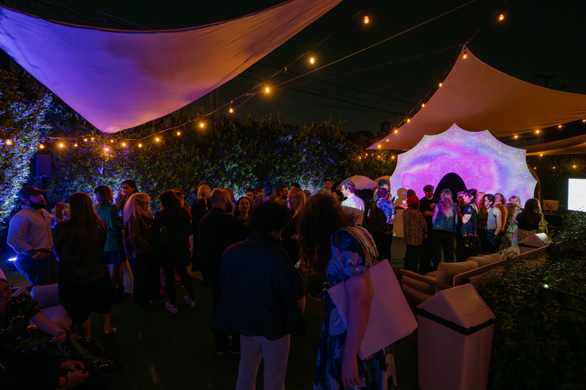
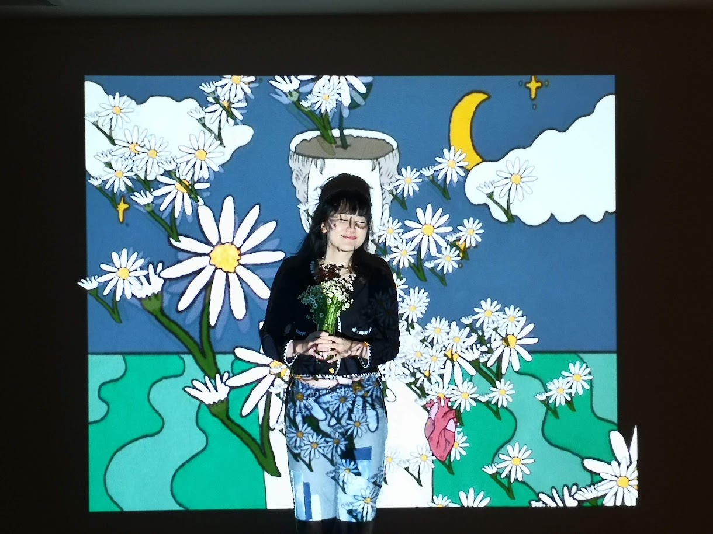
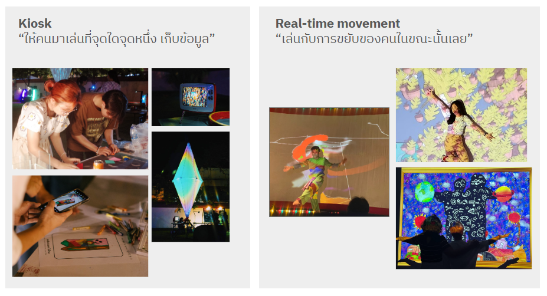

🎯 ทุกคนมี interactive sketch ที่ใช้ได้จริงบนเครื่องตัวเอง
🎯 ต่อ input (motion และ camera) เข้า TD · เก็บข้อมูล · เห็นว่า TD ต่อเข้าระบบอื่นได้
🎯 ทำ Mini Interactive Project ที่นำกลับไปใช้ในงานได้
งานแบบที่ทีมจะทำเองได้หลังเวิร์กชอป ทั้ง interactive installation, projection, kiosk และ real-time


